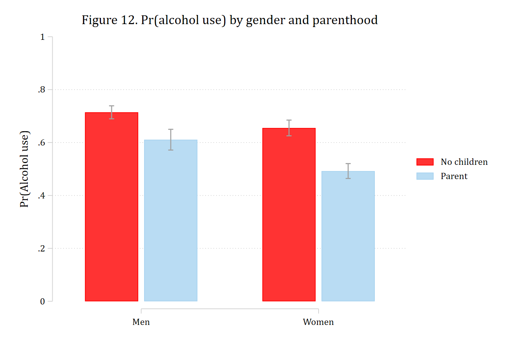
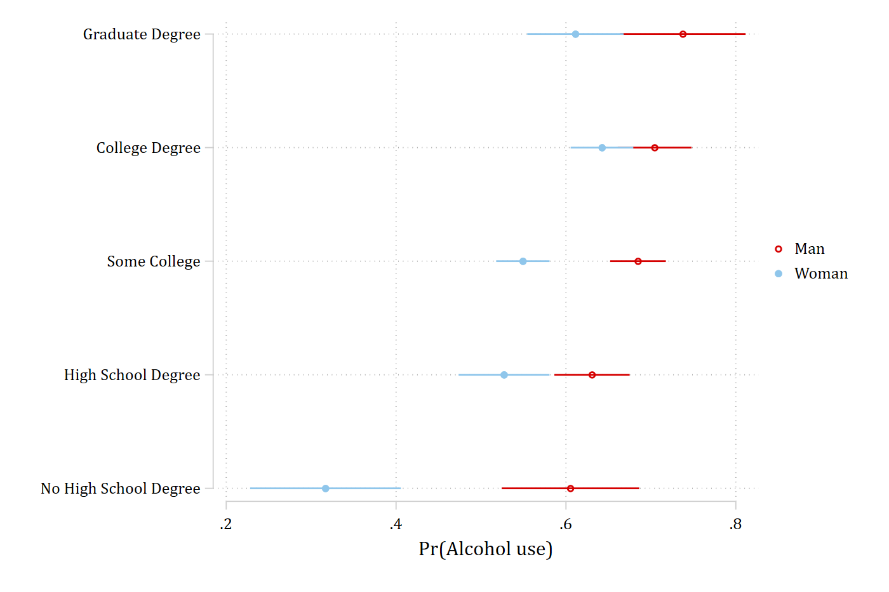

Two nominal variables
Gender × parenthood and gender × education: Tables 3–4 and Figures 12–13 of Mize (2019)
Interactions between two nominal variables are the simplest case: there are only a few combinations of the focal variables at which to look. The article’s example asks whether becoming a parent changes the probability of drinking alcohol differently for men and women, using Wave IV of Add Health, and then whether the gender gap in drinking differs by level of education.
Binary × binary: gender and parenthood
use "https://tdmize.github.io/data/data/nli_ah4", clear(Add Health Wave IV | NLI - Nonlinear Interaction Effects | 2018-12-17)
. quietly logit alcB i.woman##i.parrole c.age i.race c.income i.educ, vce(robust)
estimates store alcmodThe predictions (Figure 12)
The four predicted probabilities, from margins, plotted as bars with coefplot. Each set of predictions is stored so that coefplot can arrange them by parental status within gender.
quietly margins, at(woman=(0 1) parrole=0) post
estimates store prno
estimates restore alcmod(results alcmod are active now)quietly margins, at(woman=(0 1) parrole=1) post
estimates store prpar. coefplot prno prpar, vertical recast(bar) barwidth(0.3) ///
ciopts(recast(rcap) color(gs10)) citop ///
legend(order(1 "No children" 3 "Parent")) ///
xlabel(1 "Men" 2 "Women") ytitle("Pr(Alcohol use)") ylabel(0(.2)1) ///
title("Figure 12. Pr(alcohol use) by gender and parenthood")
graph export "fig/nli-alcohol-predictions.png", replace width(1400)file fig/nli-alcohol-predictions.png saved as PNG format
First and second differences (Table 3)
The effect of parenthood for men and for women is mecompare with by(woman); the second difference – is the effect of parenthood the same for both? – is the difference between the two rows.
mecompare i.parrole, models(alcmod) by(woman)Predicting: Pr(alcB)
Marginal effects (N_alcmod=4307)
| ME # Estimate Robust SE P>|z|
---------------------------------+---------------------------------------
parrole |
Parent - No Child |
Man | 1 -0.103 0.023 0.000
Woman | 2 -0.163 0.021 0.000metest 1 - 2 | estimate se pvalue
---------------------------------+--------------------------------
parrole_woma~0 - parrole_woma~1 | 0.059 0.031 0.055 Parents are less likely to drink than non-parents of the same gender, and the drop is larger for women than for men (though the second difference is only marginally significant). The other side of the interaction is the gender gap for non-parents and for parents:
mecompare i.woman, models(alcmod) by(parrole)Predicting: Pr(alcB)
Marginal effects (N_alcmod=4307)
| ME # Estimate Robust SE P>|z|
---------------------------------+---------------------------------------
woman |
Woman - Man |
No Children | 1 -0.059 0.020 0.003
Parent | 2 -0.118 0.025 0.000metest 1 - 2 | estimate se pvalue
---------------------------------+--------------------------------
woman_parrol~0 - woman_parrol~1 | 0.059 0.031 0.055 Nominal with several categories: gender and education
With a five-category education variable the logic is the same; there are simply more comparisons.
quietly logit alcB i.educ##i.woman c.age i.race c.income, vce(robust)
estimates store alcedmodThe predictions (Figure 13)
The ten predicted probabilities as a dot plot, education on the axis and one marker per gender. As for Figure 12, the predictions for each gender are posted and stored separately so that coefplot labels the levels of education and lines the two genders up:
quietly margins educ, at(woman=0) post
estimates store Men
estimates restore alcedmod(results alcedmod are active now)quietly margins educ, at(woman=1) post
estimates store Women. coefplot Men Women, ciopts(color(*.4)) ///
xtitle("Pr(Alcohol use)") xlabel(.2(.2).8) ///
title("Figure 13. Pr(alcohol use) by gender and education")
graph export "fig/nli-alcohol-education.png", replace width(1400)file fig/nli-alcohol-education.png saved as PNG format
The gender gap at each level of education (Table 4)
by(educ) gives the marginal effect of gender at each level of education, one row per level. A joint test that the five gaps are equal is the overall test of interaction; the pairwise second differences say which levels differ.
mecompare i.woman, models(alcedmod) by(educ)Predicting: Pr(alcB)
Marginal effects (N_alcedmod=4307)
| ME # Estimate Robust SE P>|z|
---------------------------------+---------------------------------------
woman |
Woman - Man |
No High Sch~e | 1 -0.288 0.061 0.000
High School~e | 2 -0.104 0.035 0.003
Some College | 3 -0.136 0.023 0.000
College Deg~e | 4 -0.062 0.029 0.032
Graduate De~e | 5 -0.126 0.047 0.007metest 1 = 2 = 3 = 4 = 5Tests of equality
| chi2 df pvalue
---------------------------------+--------------------------------
1=2=3=4=5 | 12.497 4.000 0.014 The gap is significant at every level of education – men are more likely to drink – and the gaps are not all the same size. Table 4 of the article reports which pairs differ; the contrasts with the lowest education level, accumulated into one table with add:
metest 1 - 2, rowname("No HS - HS") | estimate se pvalue
---------------------------------+--------------------------------
No HS - HS | -0.185 0.070 0.008 metest 1 - 3, add rowname("No HS - Some college") | estimate se pvalue
---------------------------------+--------------------------------
No HS - HS | -0.185 0.070 0.008
No HS - Some college | -0.153 0.065 0.019 metest 1 - 4, add rowname("No HS - College") | estimate se pvalue
---------------------------------+--------------------------------
No HS - HS | -0.185 0.070 0.008
No HS - Some college | -0.153 0.065 0.019
No HS - College | -0.226 0.067 0.001 metest 1 - 5, add rowname("No HS - Graduate") | estimate se pvalue
---------------------------------+--------------------------------
No HS - HS | -0.185 0.070 0.008
No HS - Some college | -0.153 0.065 0.019
No HS - College | -0.226 0.067 0.001
No HS - Graduate | -0.162 0.077 0.035 The gender gap among those without a high school degree is larger than at every other level. Any other pair is tested the same way, e.g. metest 2 - 4.
The other side: education within gender
The article omits this side for space but recommends examining it. With i.educ as the focal variable, each row is a contrast with the base category; pwcompare would give all ten pairwise contrasts instead.
mecompare i.educ, models(alcedmod) by(woman)Predicting: Pr(alcB)
Marginal effects (N_alcedmod=4307)
| ME # Estimate Robust SE P>|z|
---------------------------------+---------------------------------------
educ |
High Schoo - No High Sc |
Man | 1 0.025 0.047 0.590
Woman | 2 0.210 0.052 0.000
Some Colle - No High Sc |
Man | 3 0.080 0.045 0.075
Woman | 4 0.232 0.047 0.000
College De - No High Sc |
Man | 5 0.099 0.047 0.036
Woman | 6 0.326 0.049 0.000
Graduate D - No High Sc |
Man | 7 0.132 0.056 0.019
Woman | 8 0.294 0.054 0.000